地政学
フナフティは、広い排他的経済水域を持つ小島嶼国家の政治窓口です。気候交渉、海洋境界、漁業権、援助、豪州との移動協定が、細い環礁の官庁、空港、ラジオのニュース、港の待合、家族の相談に日々集まります。
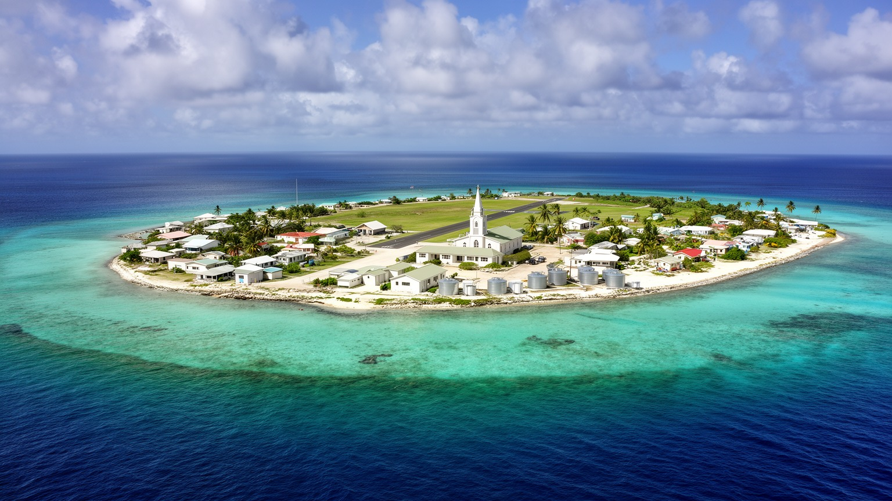
🇹🇻 ツバル / フナフティ環礁 / World City Atlas
ラグーンを囲む細い島々のうち、フォンガファレに官庁、空港、港、学校、病院、教会、住宅が集まる、ツバルの政治と生活の中心です。
都市の骨格
フナフティは大きな都心を持つ都市ではなく、フォンガファレの細い陸地に官庁、学校、病院、空港、港、教会、店、家族の敷地が並ぶ環礁首都です。海の美しさと土地不足が、同じ毎日の中にあります。
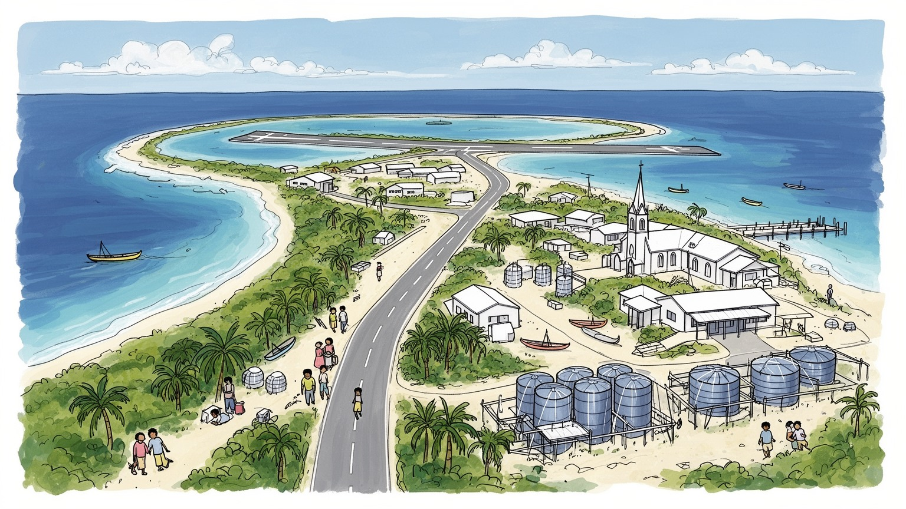
フナフティは、広い排他的経済水域を持つ小島嶼国家の政治窓口です。気候交渉、海洋境界、漁業権、援助、豪州との移動協定が、細い環礁の官庁、空港、ラジオのニュース、港の待合、家族の相談に日々集まります。
政府、学校、病院、港、空港、漁業、建設、援助、小売が雇用を支えます。送金、露店、店の掛け売り、魚売り、買い物、滑走路周りの小商いも家計の現場となり、女性と若者の働き方、帰省費用、学費、制服代も映します。
教会、ファレカウプレ、歌、踊り、家族行事、土地の系譜が共同体を形づくります。日曜礼拝、祝祭の食事、夜の合唱、バレーボール、学校行事、葬儀の助け合い、ラジオの案内が、子どもと高齢者の世代も結びます。
旅行者はラグーン、保護区、戦跡、空港横の道、教会を訪ねます。住民は水、家賃、輸入品価格、高潮、通学、医療、SNSの船便情報、買い物、夜の涼み、魚を焼く煙、海風と油の匂い、発電機音に毎日の生活で向き合います。
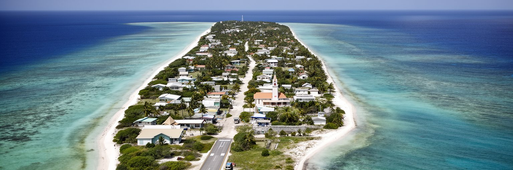
フナフティの中心は、広いラグーンを囲む環礁の東側、フォンガファレの細長い陸地に置かれています。地図で見ると島は小さな線に近いが、その上に官庁、国会、裁判、空港、港、学校、病院、教会、商店、住宅、水タンク、墓地が詰め込まれます。海から海までの幅が限られるため、都市は内陸へ広がることができず、道路、家、公共施設、祈りの場が互いに近くなります。空港滑走路は交通の入口であると同時に、住民が歩き、遊び、集まる広い公共空間にもなります。ラグーン側は穏やかに見えますが、生活排水やごみ、水質の問題を抱え、外洋側は波と侵食にさらされます。フナフティの形を読むことは、首都の便利さと脆さがなぜ同じ場所に現れるのかを読むことでもあります。面積は小さいが、国家の制度、家族の土地、移動、気候危機が短い距離に重なっています。一本の道が混めば通学も通勤も病院も遅れ、高潮が低い場所を越えれば住宅と公共施設が同時に影響を受けます。環礁都市の美しさは、都市計画上の余白の少なさと切り離せません。だから小さな排水路、護岸、歩道、水タンク、廃棄物置き場の改善が、首都の機能を守る大きな仕事になります。フナフティは、地形そのものが都市の設計条件になっている場所です。細い土地に暮らす人々は、家の前の海、滑走路、教会、店を日常の一部として使い分け、限られた空間を共同で読み替えています。
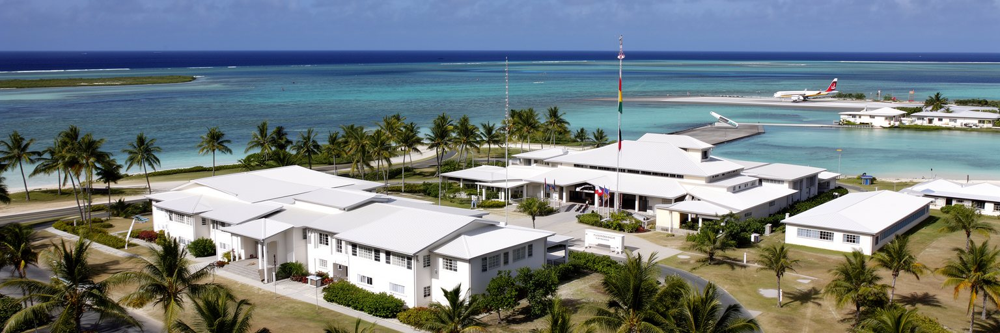
ツバルの国土面積は小さいが、海洋としての広がりは大きく、フナフティはその国家を世界へ接続する窓口です。大統領府ではなく議院内閣制の政府機能、議会、各省庁、裁判、通信、国際機関の事務、外交訪問、援助調整がこの環礁に集中します。気候変動、海面上昇、漁業権、海洋境界、移住、デジタル国家、インフラ資金は国際会議で語られますが、最終的にはフナフティの官庁、港、空港、学校、家庭へ戻ってきます。外島の住民にとって首都は、進学、医療、行政手続き、雇用、物資の集散地であり、同時に遠い場所でもあります。船便や航空便が不安定なら、制度への距離はさらに広がります。フナフティの政治性は、建物の大きさでは測れません。小さな会議室で決まる予算や協定は、外島の診療所、教員配置、船の燃料、海岸保全、奨学金に関わります。豪州とのファレピリ連合のような移動と安全保障をめぐる枠組みも、気候危機を抱える国家の将来を問います。首都の住民は国際政治の象徴として語られる一方、日々は水の確保、家賃、仕事、教会行事に追われます。フナフティを読む時には、世界の注目と住民の実務の距離を見る必要があります。海洋国家の主権は、広い海を管理する力だけでなく、細い首都で公共サービスを保つ力にも支えられています。外交の言葉が強くなるほど、それを暮らしの改善へ変える行政の細かさが問われます。
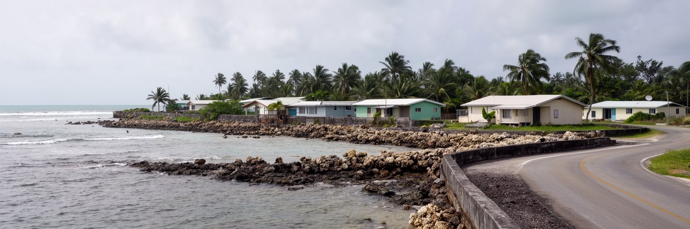
フナフティは、気候変動を象徴する地名として世界で何度も語られてきました。ですが住民にとって海面上昇は抽象的な未来ではなく、高潮、キングタイド、塩水化、海岸侵食、豪雨の冠水、滑走路や道路の水たまり、墓地や家屋の被害として現れます。平均標高が低い環礁では、少しの水位変化が生活空間の選択肢を狭めます。護岸を置く場所、砂を補う場所、家を直す場所、水源を守る場所、ごみを処理する場所が互いに競合し、土地の所有や親族関係も対策を難しくします。外からは「沈む島」として単純化されやすいが、フナフティの現実はもっと複雑です。住民は海を恐れるだけでなく、魚をとり、遊び、祈り、家族の記憶を持ち、移動の道として使い続けます。気候適応には、護岸や埋め立てだけでなく、排水、衛生、水タンク、住宅補強、災害情報、外島支援、移住の選択肢、文化の継承が必要になります。国際社会へ責任を問う声は重要ですが、首都ではその声が、今日の学校が開くか、道路を歩けるか、飲み水が塩辛くならないかという問いに変わります。フナフティは、気候正義が外交の言葉であると同時に、家の床と庭の問題であることを示す都市です。海を背景にした美しい写真だけでは、この緊張は見えません。波を止める工事と同じくらい、住民がどこで学び、働き、葬り、祈り続けるかを考える社会的な合意が必要になります。
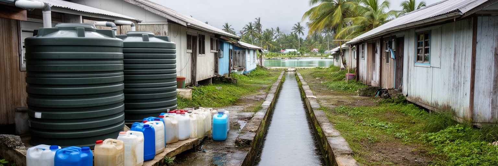
海に囲まれたフナフティで、最も不足しやすいものの一つが飲める水です。環礁の地下水は海水の上に薄く浮くレンズのような存在で、過剰な利用、塩水化、汚染、干ばつに弱いです。雨水タンクは家庭の生命線ですが、屋根の状態、貯水量、清掃、乾季の長さに左右されます。住宅が密集し、トイレ、排水、井戸、ごみ置き場、海辺の距離が近くなると、衛生上の負担はすぐ飲み水と健康へつながります。下痢性疾患や皮膚病、蚊、悪臭は、単なる個人の管理不足ではなく、土地の狭さと公共インフラの限界から生じる都市の焦点です。ラグーンの水質が悪化すれば、魚や貝、子どもの遊び場、観光の印象にも影響します。水の管理は、気候適応、保健、教育、廃棄物、住宅政策を結びつける中心的な焦点です。給水が不安定になれば、家事や学校、病院、店の営業が止まり、女性や子どもに負担が偏りやすいです。フナフティの水を読むことは、環礁都市の尊厳を読むことでもあります。新しいタンクや配管だけでなく、保護区域、汚水処理、住民参加、料金の公平性、修理できる技術者が必要になります。淡水は目立ちませんが、首都の基礎インフラです。海の豊かさのすぐ横で、飲める水をどう守るかが都市の将来を決めています。水質への信頼が落ちれば、人々は飲料を買い、家計はさらに圧迫されます。水の管理は貧困対策でもあります。
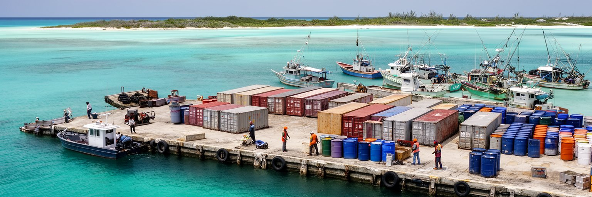
フナフティの港は、ツバルがどれほど外部の物流に支えられているかを示す場所です。米、小麦粉、缶詰、燃料、建材、医薬品、学校用品、発電設備、通信機器、援助物資は、長い海上輸送を経て首都へ届きます。船便が遅れれば店の棚は変わり、燃料が不足すれば発電、車、船、給水、冷蔵、建設が影響を受けます。ラグーンや外洋の魚は食卓に近いですが、現金経済が広がった首都では輸入品への依存も強いです。港は国の経済統計の入口であると同時に、家庭の夕食、学校の教材、病院の薬、公共工事の進み方を決める場所です。小さな経済では、港湾作業、税関、倉庫、輸送、店、修理、建設、漁業の仕事が互いに近いです。国のGDPでは公共部門やサービスの比重が大きいですが、その多くも輸入された燃料や資材なしには動きません。フナフティを経済都市として読むには、大きな金融街ではなく、岸壁に着く貨物と家庭の家計を結びつけて見る必要があります。世界市場の価格、為替、燃料費、天候、船の本数が、首都の生活費を左右します。港の効率化は単なる成長政策ではなく、物価と保健と教育を守る政策でもあります。漁船、貨物船、小さなボートが同じ水面を使う風景は、海洋国家の日常的な経済の姿です。港が止まれば、国の小ささはすぐ弱点になります。岸壁の維持、倉庫、冷蔵、燃料備蓄、通関の透明性は、目立たなくても国家の安全保障に近い意味を持ちます。港に近い店先には箱の匂い、油の音、船便を待つ会話が重なります。
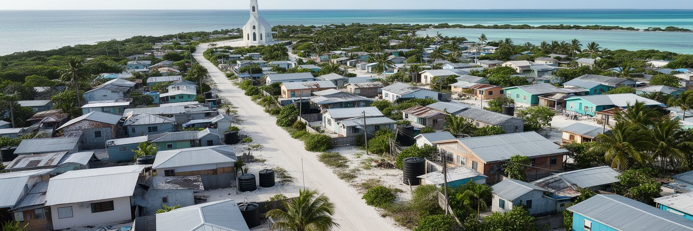
フナフティの住宅問題は、人口規模だけを見ても理解できません。国全体では小さな人口でも、首都機能がフォンガファレに集中し、外島から進学、医療、仕事、行政手続きのために人が集まるため、使える土地は強く圧迫されます。家族の敷地には増築が重なり、台所、寝る場所、雨水タンク、トイレ、物置、車、海辺への通路が細かく調整されます。親族の土地に住む安心はありますが、相続や利用をめぐる緊張も生まれます。若者が独立した住まいを持つことは難しく、家賃や材料費の高さは将来設計を狭めます。過密は感染症、学習環境、家庭内のストレス、プライバシー、火災、高潮後の片付けにも関係します。外から見る海辺の家並みは穏やかでも、住民には狭さと公共サービス不足が日常の負担として現れます。住宅を改善するには、単に新しい家を建てるだけでは足りません。水、衛生、排水、廃棄物、避難、土地記録、親族間の合意、外島で暮らし続けられる教育や医療の整備が必要になります。首都へ来なければならない理由が多いほど、フナフティの土地不足は深くなります。住まいは建物であると同時に、国家機能の集中が家庭へどう現れるかを示す場所です。狭い敷地での工夫は大きいが、その工夫に頼り続けるだけでは、都市の健康を守ることはできません。家の混雑は子どもの勉強、病人の休息、家族関係にも影響し、住まいの質は福祉そのものになります。
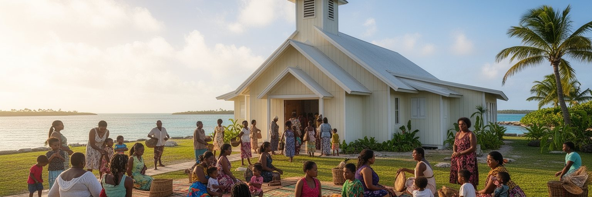
フナフティの社会を支える柱には、教会、ファレカウプレ、親族、学校があります。キリスト教の礼拝は週の時間を区切り、歌、祈り、献金、青年会、女性会、葬儀、結婚、祝いの食事、困窮時の支援を通じて都市の安全網になります。外島から来た人にとって、同じ島や教会のつながりは住まい、情報、仕事、食事を得る入口にもなります。伝統的な集会の場では、土地、行事、地域の相談、政治的な話し合いが行われ、狭い住宅では持ちにくい公共性を補います。信仰や共同体は、行政の制度だけでは届かない支えを提供する一方、献金や行事の費用、親族への義務が家計を圧迫することもあります。共同体は温かいだけでなく、期待と負担を伴う制度でもあります。フナフティの文化を読むには、ラグーンの青さだけでなく、礼拝後の会話、歌声、踊り、食事を分ける時間、集会での座り方を見る必要があります。都市化が進んでも、土地の系譜と島の記憶は人々の判断を形づくります。気候危機や移住の議論が深まるほど、共同体はどこで暮らし続けるのか、何を持って移動するのかを考える場にもなります。信仰の場所は、過去の島のつながりを首都の現在へ移す装置であり、同時に不安な未来を相談する場所でもあります。フナフティの柔らかな秩序は、こうした集まりの中で保たれています。歌と踊りは余暇ではなく、若い世代へ言葉、礼儀、島の系譜を渡す教育でもあります。
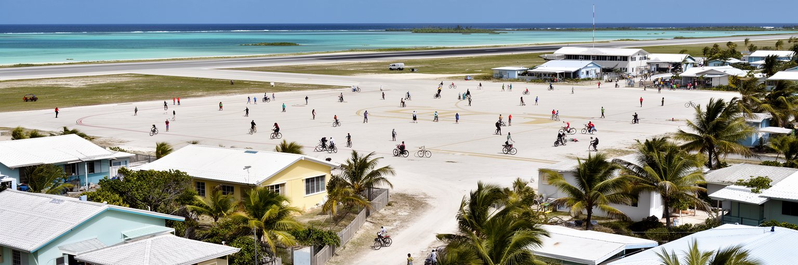
フナフティ国際空港は、ツバルを外の世界へつなぐ数少ない空の入口です。航空便は医療、留学、外交、援助、観光、輸入品、親族訪問を支え、天候や運航の乱れは国全体の予定を左右します。ですがフナフティの滑走路は、単なる交通施設ではありません。便のない時間には住民が歩き、子どもが遊び、サッカーやバレーボール、集まりの場として使われることがあり、細い首都で貴重な広い空間になっています。都市の公共空間が限られるため、空港は国家の玄関と近隣の広場という二つの役割を持ちます。道路は島の長さに沿って走り、バイク、車、歩行者、荷物、学校へ向かう子ども、教会へ向かう家族が同じ空間を分け合います。交通量は大都市ほど多くなくても、道幅、排水、舗装、高潮、駐車、燃料、修理の負担は生活のリズムを左右します。船もまた重要で、外島との連絡、漁、保護区への移動、物資輸送を担います。フナフティの移動を読む時には、距離の短さだけで便利だと考えてはいけません。海と天候に囲まれた都市では、一本の滑走路、一つの港、一本の道路の信頼性が国家の移動能力を決めます。空港の広さに人が集まる風景は、土地不足の首都で公共空間がどれほど貴重かを示しています。移動のインフラは、生活の場所でもあります。滑走路が閉じる時間と開く時間を住民が共有すること自体が、首都の独特なリズムを作っています。夕方の風、ボールを追う声、離着陸を知らせる情報が同じ場所で混ざります。
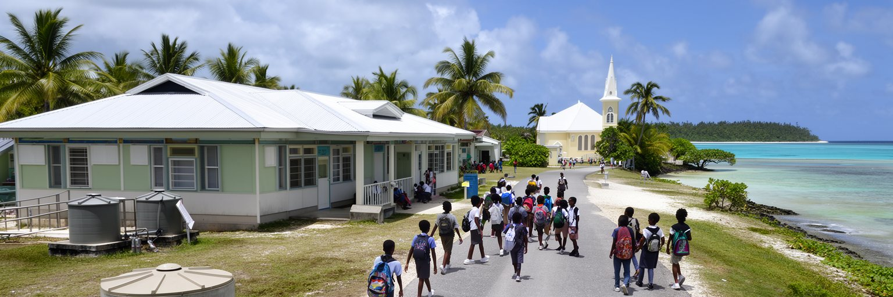
フナフティは、ツバルの若者にとって進学、訓練、仕事、情報が最も集まる場所です。外島では学校、医療、通信、仕事の選択肢が限られるため、家族は子どもを首都へ送り、親族宅に住ませることがあります。教室では英語、ツバル語、数学、宗教、海洋、気候、保健、情報技術が学ばれ、若者は島に残る道、首都で働く道、海外で学ぶ道、移住や季節労働へ向かう道を考えます。国の人口が少ないため、一人の専門人材が行政、医療、教育、通信を支える重みは大きいです。ですが卒業後の雇用は限られ、政府や援助事業、学校、病院、店、建設、漁業、教会関連の仕事だけでは期待を十分に受け止められません。通信が外の世界を近くする一方、費用、機器、学習環境の差も残ります。若者をめぐる焦点は、意欲の不足ではなく、小さな労働市場と気候不安の中で、将来をどう描くかという点にあります。フナフティの学校や青年会は、知識だけでなく、島を離れる可能性と戻る可能性を考える場にもなります。海外へ出る力を育てることと、国内で暮らし続ける力を守ることは矛盾しません。若い世代が文化、言語、信仰、海の知識を持ちながら世界とつながれるかどうかが、ツバルの将来を左右します。首都の教室には、小さな国の大きな選択が集まっています。放課後のボール遊び、教会の青年会、SNSの連絡網も、進路と友情を支える日常の場になります。進路の選択は個人の夢であると同時に、家族の支援、送金、帰郷、文化継承をめぐる社会的な判断でもあります。
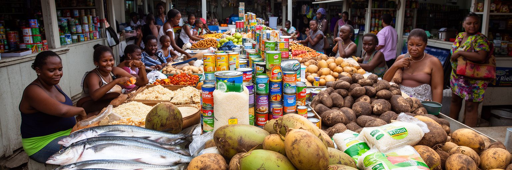
フナフティの食卓には、魚、ココナツ、パンノキ、プラカ、米、缶詰、麺、砂糖、輸入飲料が並びます。外島では自給的な食の比重が比較的大きいですが、首都では土地が狭く人口が集中しているため、輸入食品と現金収入への依存が強くなります。店に並ぶ米や缶詰は便利で保存しやすいですが、輸送の遅れ、燃料価格、為替、港の混雑に左右されます。安い加工食品は家計を助ける一方、糖尿病、肥満、高血圧、子どもの栄養という保健上の焦点にもつながります。魚は重要なタンパク源ですが、ラグーンの水質、漁獲圧、天候、燃料代、保存の条件に左右されます。食を伝統か近代かで単純に分けることはできません。家族は現金、親族からの分け前、海で獲れる魚、教会行事の食事、店の掛け売り、海外からの送金を組み合わせて毎日をつなぎます。食料安全保障は農地だけで決まりません。港、冷蔵、衛生、収入、健康教育、海の管理、外島との関係が食卓を支えます。ラグーンの魚と輸入米が同じ皿に乗る時、そこには環礁首都の現代性が表れます。海の豊かさだけでは、過密な首都の食卓を安定させられません。魚の匂い、缶詰の棚、揚げ物の油の音、学校帰りの買い食いは、物流と健康が交差する感覚でもあります。輸入への依存を現実として受け止めつつ、地元の食材、健康、物流の強さをどう守るかが問われています。小さな店の棚は、世界の輸送網と家庭の健康を同時に映しています。
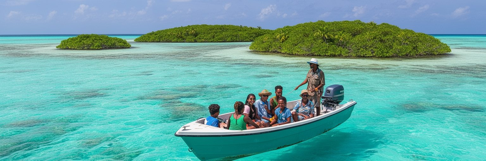
フナフティの観光は、大規模なリゾート消費ではなく、ラグーン、保護区、教会、空港横の道、戦争の記憶、外島への船、日常の市場を通じてツバルを理解する旅に近いです。フナフティ保護区では、サンゴ礁、魚、海鳥、小島の植生が守られ、透明な水と静かな島の風景が訪問者を引きつけます。ですが観光の魅力は、海の美しさだけではありません。細い陸地に国家機能、家族の暮らし、信仰、気候危機が重なる現実を見て、低島嶼国の現在を考えることが欠かせません。訪問者は住宅、礼拝、墓地、学校、子ども、高齢者、戦跡への配慮を忘れてはなりません。過密、ごみ、水不足、高潮の被害を珍しい光景として消費する態度は、地域への敬意を欠きます。観光が地域に利益をもたらすには、地元ガイド、小規模宿泊、食堂、手工芸、ボート、文化行事、環境管理へ支出が届く形が望ましいです。案内板や施設だけでなく、廃棄物処理、水質保全、歩行環境、文化の説明、保護区の管理が観光の質を決めます。フナフティは南国の絵葉書ではなく、海と共に暮らす国家の玄関です。旅行者が美しいラグーンと生活の制約を同時に理解できれば、滞在は単なる遠い島への訪問ではなく、気候時代の都市を学ぶ時間になります。小さな支出と慎重なふるまいが、首都の観光を住民にとって意味あるものにします。夕方の教会の歌、店先の会話、船を待つ時間にも、ツバルの社会を支える移動と親族のつながりが見えてきます。
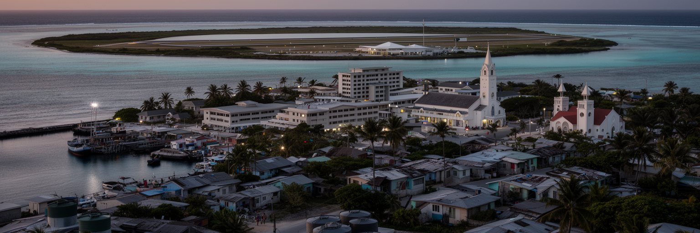
フナフティは、人口や経済規模だけで測れば小さな首都です。しかし、この環礁には二十一世紀の都市が直面する大きな問いが圧縮されています。国家行政、海洋主権、気候危機、移住、援助、漁業権、輸入依存、水不足、住宅、信仰、外島との関係が、一本の道路と一つの滑走路の周辺に集まります。海は美しい背景ではなく、食料、交通、境界、外交、危険、記憶の場です。土地が少ないことは、住まい、墓地、学校、病院、港、排水、ごみ置き場の選択肢を狭め、同時に住民同士の距離を近くします。気候変動は国際会議の議題である前に、家の前の波、塩辛くなる水、冠水した道、移住を考える家族の会話として現れます。フナフティを「沈む島」の一言に閉じ込めると、人々が働き、学び、祈り、魚を分け、外島と連絡し、将来を選び取ろうとする姿が見えなくなります。重要なのは、危機だけでなく、都市を維持する知恵と共同性を見ることです。フナフティを読むことは、地図の小さな点から世界の排出責任、海洋の公平性、移動の権利、文化の継承を考えることでもあります。小さな首都は、未来の都市問題を早く、鋭く見せています。そこに、この都市を世界都市アトラスで読む意味があります。ラグーン、港、教会、滑走路、水タンクを別々の景色としてではなく、同じ都市の部品として見る時、フナフティの重要性ははっきりします。